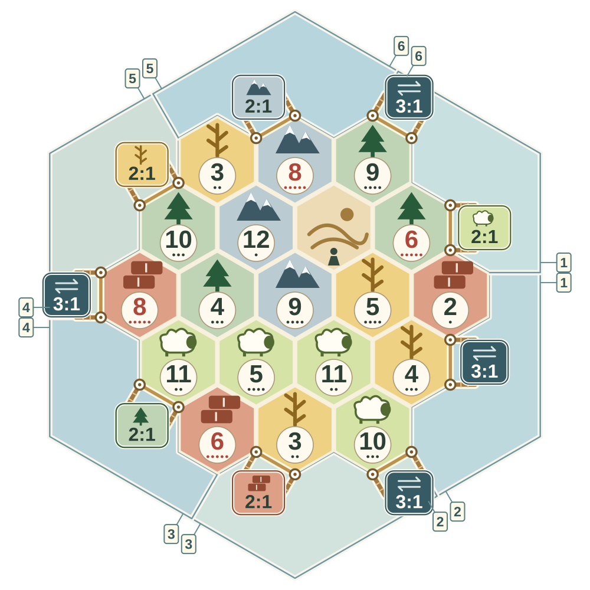

Catan Board Randomizer
Base game · 3–4 players
Your next island.
Balanced
Terrain & port symbols
WoodWheatWoolBrickOreDesert
Board generated: Balanced
Use either marked corner for that port.
2:1 = shown resource · 3:1 = any one resource
2:1 = shown resource · 3:1 = any one resource
Match the numbered ends to assemble the frame.
Make it your game
Choose balance
BalancedRandomLight
balanceBalancedStrong
balanceVery
balanced
balanceBalancedStrong
balanceVery
balanced
Spreads production across resources and the island, while keeping variety.